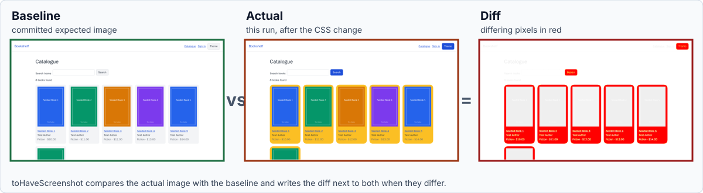

Visual Regression Testing
|
This content was generated with the assistance of AI and should be verified against the official documentation before being relied on in production. |
A functional E2E test proves that a user can do something: type a query, press a button, see the right text. It says
nothing about whether the page looks right. A CSS change that turns every card amber, a font that silently falls back
to the default one, an icon that renders at the wrong size or a layout that overflows on a phone all pass every
toHaveText assertion. Visual regression testing closes that gap: the test captures an image of the page (or of one
element), compares it with an image that a human approved earlier, and fails when the two differ by more than a
tolerance.
This page covers the idea and the vocabulary, then each tool in turn: Playwright’s built-in toHaveScreenshot (the
only one of the three that ships a comparison engine), the plugin and service ecosystem around Cypress, and Selenium,
which only offers screenshot primitives and is usually combined with a library or with WebdriverIO’s visual service. It
ends with the commercial services (Percy, Applitools Eyes, Chromatic) and with the review workflow that makes visual
tests survivable in a team. The versions are Playwright 1.64, Cypress 16.2 and Selenium 4.51, checked on 25 October
2026; the WebdriverIO examples use WebdriverIO 10.1 with @wdio/visual-service 11.0. All examples ran against the
Bookshelf application: Playwright 1.64.1 in the official
Docker image on Chromium, Firefox and WebKit (38 tests passed and one was skipped on purpose), Cypress 16.2.0 on Electron
in its Docker image, Selenium 4.51.0 for Python and Java against selenium/standalone-chrome:4.51.0, and WebdriverIO both
on a local Chrome 155 and through that same Selenium Grid container. The cloud services were not run, because they need
accounts and tokens; their snippets are written from the vendors' documentation and are labelled as such.
For capturing screenshots as evidence (without comparing them), see Screenshots, Videos & Traces. Test reliability in general is the subject of Flaky Tests & Reliability, and the CI setup that produces stable images is in Running in CI/CD.
Three ways to compare a page
Every visual tool answers the same question, "is this the same page?", with one of three families of technique.
| Family | What is compared | Strengths | Weaknesses |
|---|---|---|---|
Pixel comparison |
The decoded pixels of two images, one by one, usually with a small per-pixel colour tolerance. |
Catches anything visible: spacing, colour, clipping, a missing image, an overlapping element. Needs no knowledge of the markup. Deterministic and cheap, and the diff image points at the exact spot. |
Sensitive to everything that changes pixels without changing the design: anti-aliasing, font rendering, operating system, GPU, browser version. A one-pixel shift of a header moves every pixel below it. |
Perceptual comparison |
The same images, but "different" is judged by a colour-distance model close to human vision (Playwright and the WebdriverIO service use the pixelmatch library) or by a trained model (the "Visual AI" of commercial services). |
Ignores differences nobody can see, and with a model it can ignore layout shifts or dynamic text on purpose. |
The tolerance hides real changes when it is too generous (see the threshold pitfall), and a model is a black box that you cannot run offline. |
DOM or structure comparison |
The accessibility tree, the HTML or the computed styles, serialised to text. |
Stable across machines because it contains no pixels. Reviewable as a text diff in a pull request. |
Blind to anything that does not change the serialised structure: a colour change, an overlapping element, a font that fails to load. |
The three are complements, not rivals. A practical suite uses a handful of pixel baselines for the pages and components whose appearance matters, aria snapshots (see below) for the structure of everything else, and ordinary assertions for behaviour.
Baseline, actual and diff
Whatever the tool, three images are involved.
-
The baseline (called expected by Playwright, reference or golden elsewhere) is the approved image. It is committed to the repository, or stored by a cloud service, and it is the definition of "correct".
-
The actual image is what the test captured in this run.
-
The diff image highlights the pixels that exceed the tolerance. Playwright paints them red on a faded copy of the baseline; the other tools use similar colours.

The figure is a real result from the examples on this page. Starting from baselines captured in the Playwright Docker image, the Bookshelf stylesheet was changed so that the book cards are amber with rounder corners and the buttons use the accent colour. The next run failed with "135490 pixels (ratio 0.15 of all image pixels) are different" and Playwright wrote the three images above next to the test results. The page text did not change, so no functional assertion would have noticed.
A baseline has a life cycle, and most of the pain of visual testing comes from managing it rather than from the comparison itself:
Playwright: toHaveScreenshot
Playwright Test bundles the whole mechanism: capture, comparison with pixelmatch, baseline storage, update flag and
diff reporting. expect(page).toHaveScreenshot() and expect(locator).toHaveScreenshot() are web-first assertions like
the ones in Assertions: on every attempt Playwright takes a screenshot,
waits until two consecutive screenshots are identical (so animations and late-loading content settle), and only then
compares the stable image with the baseline. The Python, Java and .NET bindings have no equivalent of this assertion
(see Python, Java & .NET); they can take screenshots and
compare them with a library, as the Selenium examples below do.
First run, naming and the platform suffix
The first run of a test with no baseline writes the image and fails, so that a pipeline never silently passes with nothing to compare against. This is the output of the first run of a test with unnamed snapshots in a project without a name, run in the Docker image:
Error: A snapshot doesn't exist at /work/t/default-names.spec.ts-snapshots/default-names-1-linux.webp, writing actual.
Error: A snapshot doesn't exist at /work/t/default-names.spec.ts-snapshots/landing-linux.png, writing actual.Source: Playwright: Visual comparisons
The pieces of the default file name are the snapshot name (generated as default-names-1 or given as the first
argument), the project name when the project has one (landing-chromium-linux.png), and the platform. The platform part
exists because screenshots differ between operating systems, so the same test needs one baseline per platform and per
browser. Baselines are stored next to the spec file in a <name>.spec.ts-snapshots directory and should be committed.
A name ending in .webp stores the baseline as WebP, which is lossless in Playwright, and the config option
expect.toHaveScreenshot.type: 'webp' does the same for every unnamed snapshot. The name can also be an array of path
segments, toHaveScreenshot(['pagination', 'bar.png']), as long as the result stays inside the snapshot directory of
the test file.
Configuration
Every option can be set per assertion or globally under expect.toHaveScreenshot (and expect.toMatchSnapshot for the
generic matcher) in playwright.config.ts, per project or for all of them. This is the configuration used by the
examples on this page:
import { defineConfig, devices } from '@playwright/test';
export default defineConfig({
testDir: './tests',
// One name per browser project, no platform suffix: every baseline comes from the same Docker image.
snapshotPathTemplate: '{testDir}/__screenshots__/{testFilePath}/{projectName}/{arg}{ext}',
expect: {
toHaveScreenshot: {
maxDiffPixelRatio: 0.01,
animations: 'disabled',
caret: 'hide',
scale: 'css',
},
toMatchSnapshot: { maxDiffPixelRatio: 0.01 },
},
use: {
baseURL: process.env.BASE_URL ?? 'http://localhost:3963',
testIdAttribute: 'data-testid',
viewport: { width: 1280, height: 720 },
locale: 'en-US',
timezoneId: 'UTC',
},
projects: [
{ name: 'chromium', use: { ...devices['Desktop Chrome'], viewport: { width: 1280, height: 720 } } },
{ name: 'firefox', use: { ...devices['Desktop Firefox'], viewport: { width: 1280, height: 720 } } },
{ name: 'webkit', use: { ...devices['Desktop Safari'], viewport: { width: 1280, height: 720 } } },
],
});Source: Playwright: TestConfig.expect
Three details matter here. The viewport, locale and time zone are fixed, because they change the pixels. The projects set
the viewport again after spreading the device descriptor, since devices['Desktop Safari'] and the other descriptors
carry their own viewport. And snapshotPathTemplate removes the platform from the file name; see the next section for
when that is a good idea.
Every option of toHaveScreenshot
The options below are accepted by both the page and the locator forms unless the description says otherwise (clip and
fullPage exist only on the page form). The defaults are those of 1.64.
| Option | Default | Effect |
|---|---|---|
|
|
|
|
|
|
|
none |
A rectangle |
|
|
Captures the whole scrollable page instead of the viewport. Page form only. |
|
none |
An array of locators. Each matching element is covered with a box in |
|
|
The colour of the boxes drawn over the |
|
none |
An acceptable ratio, 0 to 1, of differing pixels to all pixels. |
|
none |
An acceptable absolute number of differing pixels. |
|
|
Hides the default white background so the image can be transparent. It is ignored for JPEG. Chromium and WebKit support it. Firefox 157 answers "Not implemented", and the assertion then ends in a timeout, which hides the reason. |
|
|
|
|
none |
The path of one stylesheet (or an array of paths) that is applied only while the screenshot is taken. It can reach shadow DOM and inside frames, and is the cleanest way to hide a volatile element. Since 1.41. |
|
|
How different one pixel may be, as a perceived colour difference from 0 (strict) to 1 (lax), before it counts as a different pixel. It is not a percentage of the picture. |
|
the |
How long Playwright keeps taking screenshots while waiting for the page to stabilise and match. |
|
|
|
The next test uses the options that change what is captured: a clip, a full page with a per-test tolerance and a longer timeout, device pixels, an element, and a name given as path segments. It ran in all three browsers; the transparent-background test is skipped in Firefox, as the table says.
import { test, expect } from './fixtures';
test('every region and format option', async ({ page }) => {
await page.goto('/books');
await expect(page.getByTestId('book-list')).toBeVisible();
// Only a rectangle of the page, in CSS pixels.
await expect(page).toHaveScreenshot('clip-header.png', { clip: { x: 0, y: 0, width: 1280, height: 64 } });
// Whole page, with a per-test tolerance and a longer stabilisation timeout.
await expect(page).toHaveScreenshot('full.png', { fullPage: true, maxDiffPixels: 100, timeout: 10_000 });
// Device pixels instead of CSS pixels: the file is larger on high-density screens.
await expect(page.getByTestId('site-header')).toHaveScreenshot('header-device-scale.png', { scale: 'device' });
// Name given as path segments.
await expect(page.getByTestId('pagination')).toHaveScreenshot(['pagination', 'bar.png']);
});
test('transparent background', async ({ page, browserName }) => {
// Firefox 157 answers "Not implemented" to omitBackground.
test.skip(browserName === 'firefox', 'omitBackground is not implemented in Firefox');
await page.goto('/books');
// The page background is left out of the image (alpha channel) instead of being painted white.
await expect(page.getByTestId('book-card').first()).toHaveScreenshot('card-transparent.png', { omitBackground: true });
});Page, element and full-page snapshots
A page screenshot is the whole viewport. It is simple, and it fails whenever anything on the page changes, including
parts the test is not about. An element snapshot, expect(locator).toHaveScreenshot(), captures only the box of one
element (Playwright scrolls it into view first), so an unrelated change elsewhere does not fail it and a failure points at
one component. Prefer element snapshots for components, widgets, cards and table rows, and keep a few page snapshots for
the layout of the pages that matter. This test file has a page snapshot of the home page, one of the catalogue, an
element snapshot of the first book card, a dark-theme page and a phone layout, all with the same seeded data (the fixture
is shown later, in the determinism section):
import { test, expect } from './fixtures';
test.describe('visual', () => {
test('home page', async ({ page }) => {
await page.goto('/');
await expect(page).toHaveScreenshot('home.png', { fullPage: true });
});
test('catalogue', async ({ page }) => {
await page.goto('/books');
await expect(page.getByTestId('book-list')).toBeVisible();
await expect(page).toHaveScreenshot('catalogue.png');
});
test('book card element', async ({ page }) => {
await page.goto('/books');
await expect(page.getByTestId('book-card').first()).toHaveScreenshot('first-card.png');
});
test('dark theme', async ({ page }) => {
await page.emulateMedia({ colorScheme: 'dark' });
await page.goto('/books/1');
await expect(page.getByTestId('book-title')).toBeVisible();
await expect(page).toHaveScreenshot('book-detail-dark.png');
});
test('phone layout', async ({ page }) => {
await page.setViewportSize({ width: 390, height: 844 });
await page.goto('/books');
await expect(page).toHaveScreenshot('catalogue-phone.png', { fullPage: true });
});
});Source: Playwright: Visual comparisons
The dark-theme test uses page.emulateMedia({ colorScheme: 'dark' }). Playwright’s default colour scheme is light in
every browser it launches, which is one of the reasons it is a better baseline generator than a real desktop browser
whose appearance follows the operating system (a pitfall met by the WebdriverIO example below).
The threshold pitfall
threshold is a per-pixel colour distance, and its default of 0.2 is generous. The pixelmatch distance between the light
grey #f3f4f6 of the Bookshelf cards and the pale indigo #e0e7ff is far below it, so this change, which touches 18% of
the image, passed every default-configured test. A restyling of the book cards to #fde68a (a pale amber) passed as well;
only a stronger amber, #fbbf24, crossed the line and failed 10 of the 13 tests in Chromium. The same indigo change fails
at once when the threshold is zero:
import { test, expect } from '@playwright/test';
test('strict compare of the catalogue', async ({ page }) => {
await page.goto('/books?page=2');
await expect(page).toHaveScreenshot('catalogue-page-2.png', { threshold: 0, maxDiffPixelRatio: 0 });
});158645 pixels (ratio 0.18 of all image pixels) are different.Two lessons follow. First, maxDiffPixels and maxDiffPixelRatio count pixels after the threshold has decided which
pixels differ, so they cannot make up for a lax threshold. Second, choose the tolerance on purpose: a low threshold
(0.05 to 0.1) with a small maxDiffPixels for stable pages, and an explicit mask for the regions that really change,
instead of one big tolerance that makes the whole suite deaf to subtle brand-colour changes.
Updating baselines
The --update-snapshots flag (short form -u) rewrites baselines with the actual results. The flag takes a mode, and the
config option updateSnapshots accepts the same values. changed and the source-update options arrived in 1.50; in 1.64
the unspecified mode got the name default, and missing started to pass the run:
| Mode | Behaviour |
|---|---|
|
Every executed test overwrites its snapshots, matching or not. |
|
Overwrites the snapshots that did not match and also creates missing ones. This is what the flag means when you give it no value. |
|
Creates missing snapshots, and the tests that only create them pass. Snapshots that fail to match stay failures. |
|
Never writes anything. |
|
Creates missing snapshots but fails the tests that created them. This is what you get without the flag, and it keeps CI from passing silently. |
--ignore-snapshots (config option ignoreSnapshots) skips every screenshot and snapshot expectation, which is useful
for a local run on a machine whose rendering differs from the baselines. For text snapshots written inside the test
source, such as aria snapshots in a template literal, Playwright cannot overwrite a binary file; updateSourceMethod
decides what to do with the source: patch (the default) writes test-results/rebaselines.patch for you to apply with
git apply, overwrite edits the spec file, and 3way writes merge-conflict markers. A run of -u on a stale aria
snapshot printed:
New baselines created for:
t/default-names.spec.ts
git apply ../test-results/rebaselines.patchsnapshotPathTemplate
snapshotPathTemplate controls where baselines live for toHaveScreenshot, toMatchSnapshot and
toMatchAriaSnapshot. A template is a string with tokens that Playwright replaces:
| Token | Value |
|---|---|
|
The snapshot name given to the assertion, without extension (path segments joined with |
|
The extension with its dot, for example |
|
|
|
The file-system-safe project name, or an empty string. |
|
The project’s |
|
The directories of the test file relative to |
|
The file-system-safe test title including parent |
A token can be preceded by one character that is only used when the token is non-empty, as in {/projectName}. Each
assertion can have its own template under expect.toHaveScreenshot.pathTemplate and expect.toMatchAriaSnapshot.pathTemplate.
The template in the configuration above, {testDir}/__screenshots__/{testFilePath}/{projectName}/{arg}{ext}, puts all
images under one __screenshots__ directory per spec file and one folder per browser, which is easier to review than
the default and keeps the images away from the specs.
The template above also drops {platform}. That is only safe when every baseline is generated and compared on the same
platform, which is the rule of the next section. If developers also run the tests on macOS or Windows, keep the platform
in the name so that each system has its own baselines, and accept that they must be maintained.
toMatchSnapshot and WebP
expect(value).toMatchSnapshot(name) is the generic form: it compares text or binary data with a stored file and picks
the comparison from the file type (text diff, or pixelmatch for images). It is the way to compare an image that did not come
from toHaveScreenshot, such as page.screenshot() with custom options or a PDF rendered to PNG. The next file collects
the determinism techniques of the following section and also shows a WebP baseline and a toMatchSnapshot call on a
buffer:
import { test, expect } from './fixtures';
test.beforeEach(async ({ page }) => {
// A page that shows the current time, as many dashboards do.
await page.addInitScript(() => {
window.addEventListener('DOMContentLoaded', () => {
const stamp = document.createElement('p');
stamp.dataset.testid = 'build-stamp';
stamp.textContent = `Rendered at ${new Date().toISOString()}`;
document.querySelector('footer')?.append(stamp);
});
});
});
test('masked timestamp', async ({ page }) => {
await page.goto('/books');
await expect(page).toHaveScreenshot('masked-stamp.png', {
fullPage: true,
mask: [page.getByTestId('build-stamp')],
maskColor: '#ff00ff',
});
});
test('frozen clock', async ({ page }) => {
await page.clock.setFixedTime(new Date('2026-10-25T10:00:00Z'));
await page.goto('/books');
await expect(page.getByTestId('build-stamp')).toHaveText('Rendered at 2026-10-25T10:00:00.000Z');
await expect(page).toHaveScreenshot('frozen-clock.png', { fullPage: true });
});
test('style path hides the stamp', async ({ page }) => {
await page.goto('/books');
await expect(page).toHaveScreenshot('hidden-stamp.png', { fullPage: true, stylePath: './styles/hide-stamp.css' });
});
test('webp baseline and generic snapshot', async ({ page }) => {
await page.goto('/books');
await expect(page).toHaveScreenshot('catalogue.webp');
const buffer = await page.getByTestId('book-list').screenshot({ animations: 'disabled' });
expect(buffer).toMatchSnapshot('book-list-buffer.png');
});Source: Playwright: Non-image snapshots
The WebP baseline of the catalogue page was 167 KB, against 51 KB for the PNG baseline of the same view. WebP is not automatically smaller: for flat user interfaces the lossless PNG came out three times smaller here. Measure your own pages before switching.
Making screenshots deterministic
A visual test is only as good as its determinism. A failing visual test must mean "the UI changed", not "the clock ticked" or "this laptop renders text differently". Cypress’s own guide puts it as making every run render exactly the same pixels; the following checklist applies to every tool.
| Source of noise | Control |
|---|---|
Operating system, browser build, fonts, GPU, scaling |
Generate and compare in the same container image, pinned to the browser version. |
Time and dates |
Freeze the clock. |
Data from the server |
Seed or stub it, so that every run gets the same records. |
Content that cannot be controlled (ads, charts, avatars, third-party widgets) |
Mask or hide it in the screenshot. |
Animations, transitions, the text cursor, smooth scrolling |
Disable them, as |
Images, fonts and lazy content still loading |
Wait for them before the screenshot, or rely on a tool that retries until the image is stable. |
Viewport, device pixel ratio, locale, time zone, colour scheme, reduced motion, scroll bars |
Set them explicitly. |
One rendering environment
The same page renders differently on macOS, Windows and Linux, and on two Linux distributions with different fonts. Playwright’s
own guidance is to run the tests in the environment where the baselines were generated. The practical form of that advice
is to generate and compare baselines inside the official image, on laptops and in CI alike. The image carries the
browsers and their system dependencies, but not the @playwright/test package, and its tag must match the Playwright version
you installed:
docker run --rm --init --ipc=host \
-e BASE_URL=http://host.docker.internal:3963 \
-v "$PWD":/work -w /work \
mcr.microsoft.com/playwright:v1.64.1-noble \
npx playwright test --update-snapshotsSource: Playwright: Docker
--init avoids zombie processes and --ipc=host stops Chromium from running out of shared memory, both recommended by
the Playwright documentation. The container reaches an application on the host through host.docker.internal, and the
test configuration reads BASE_URL from the environment. Running as root is acceptable for your own test code; the
documentation recommends a separate user and a seccomp profile only for untrusted sites.
The difference is not theoretical. The baselines of the examples above were generated in the Linux image. Running the same Chromium tests natively on macOS against them failed 10 of the 13 tests, with pages one to three pixels shorter or taller and between 1,274 and 19,569 differing pixels (0.02 to 0.04 of each image), although no line of the application had changed. The three that passed were the two aria snapshots and the dark-theme page. This is why the configuration above omits the platform from the file name: a baseline file that cannot be reproduced on the developer’s machine should not be compared there. Developers who need to look at a failure locally run the container, or open the HTML report that CI uploads.
Seeded data and a fixed clock
Seed or stub the data, and freeze the time. Bookshelf has a seed API (see Example Application & Test Layout); every visual test in this section starts from the same eight books through an automatic fixture, so the catalogue never depends on what other tests left behind:
import { test as base, expect } from '@playwright/test';
// Every visual test starts from the same eight books, so catalogue screenshots never depend on what other
// tests (or earlier runs) left in the application.
export const test = base.extend<{ fixedCatalogue: void }>({
fixedCatalogue: [
async ({ request }, use) => {
await request.post('/api/test/seed', {
data: {
books: Array.from({ length: 8 }, (_, i) => ({
title: `Seeded Book ${i + 1}`,
author: 'Test Author',
genre: 'Fiction',
price: 10 + i,
color: ['#2563eb', '#059669', '#d97706', '#7c3aed'][i % 4],
})),
reviews: [],
},
});
await use();
},
{ auto: true },
],
});
export { expect };Source: Playwright: Automatic fixtures
For time, page.clock.setFixedTime() makes Date.now() and new Date() return a fixed value while timers keep running,
which is what a screenshot needs. page.clock.install() fakes the timers as well and lets time flow from the time you
give it, so it is the tool for pausing, fast-forwarding and testing timeouts. In the test above, which injects a
"Rendered at …" footer into the page, the first version used install, and the assertion on
Rendered at 2026-10-25T10:00:00.000Z failed because time kept moving from the starting instant; with setFixedTime it passed; the Clock API is described in
Network Mocking, Clock & API Testing. If the data comes
from a third-party API, mock the route with page.route() instead, as that page explains.
Masking, hiding and style overrides
When something must change on every run, remove it from the comparison rather than loosening the whole test. mask
covers locators with a coloured box, which keeps the layout and records that "something is here"; stylePath hides or
simplifies elements with CSS. The masked timestamp test above used mask; style path hides the stamp used this
stylesheet, applied only while the screenshot is taken:
/* Applied only while the screenshot is taken. */
[data-testid='build-stamp'] { visibility: hidden !important; }Source: Playwright: stylePath
The control run is instructive. The same page without the mask, compared with { threshold: 0, maxDiffPixels: 0 }, failed with
"154 pixels (ratio 0.01 of all image pixels) are different": the footer’s timestamp, the only changing element.
Wait for images, and set the whole context
Playwright’s retry loop covers late-loading images by waiting for two identical screenshots. Cypress and Selenium take a
single screenshot, so they must wait explicitly. The pattern in both is the same: assert that each image has a non-zero
naturalWidth before the capture (the Cypress and WebdriverIO examples below do). In one Cypress run the first version of
a test did not wait: it failed with a 21.7% difference because the book covers had not arrived yet, and passed three times
in a row once the check was added.
Set the colour scheme, too. A page that follows prefers-color-scheme renders differently on a developer machine in
dark mode, and a real browser started by WebdriverIO on the macOS host used for this page did exactly that: the card
restyling that failed in Playwright produced only a 0.7% mismatch in dark mode, because the dark theme defines its own card
colour. The WebdriverIO example pins the theme through the application’s own attribute for that reason.
Comparing against a design
A baseline normally comes from the application itself: the first approved run becomes the truth, and later runs prove that nothing changed. Sometimes the reference must come from somewhere else, a design exported from a design tool. There are two approaches.
Compare against a design export. Export the frame from the design tool at the viewport and scale the test uses (1x of a
1280 by 720 frame for a 1280 by 720 viewport), commit the PNG as a baseline under the name Playwright expects, and
compare with a tolerance that absorbs font rendering differences between the design tool and a browser. A design export
will never match pixel for pixel: the tool uses its own text engine and anti-aliasing, and it does not know the browser’s
default fonts. Start with maxDiffPixelRatio around 0.02 to 0.05 and a normal threshold, then lower it as the design and
the application converge, and mask regions that the design shows with placeholder content. A separate configuration keeps
the design frames away from the generated baselines:
import { defineConfig, devices } from '@playwright/test';
// Compares the running application with reference frames kept in design/, not with generated baselines.
export default defineConfig({
testDir: './design-tests',
snapshotPathTemplate: '{snapshotDir}/../design/{arg}{ext}',
expect: { toHaveScreenshot: { threshold: 0.2, maxDiffPixelRatio: 0.02 } },
use: {
baseURL: process.env.BASE_URL ?? 'http://localhost:3963',
viewport: { width: 1280, height: 720 }, // the frame size in the design tool
deviceScaleFactor: 1,
locale: 'en-US',
},
projects: [{ name: 'design', use: { ...devices['Desktop Chrome'], viewport: { width: 1280, height: 720 } } }],
});import { test, expect } from '../tests/fixtures';
test('catalogue matches the approved design frame', async ({ page }) => {
await page.goto('/books');
await expect(page.getByTestId('book-list')).toBeVisible();
// design/catalogue-1280x720.png is the reference frame exported at 1x for a 1280 x 720 viewport.
await expect(page).toHaveScreenshot('catalogue-1280x720.png');
});Source: Playwright: Visual comparisons
The reference frame in this example, design/catalogue-1280x720.png, was not exported from a design tool. It was seeded from
an approved run in the Docker image, which is the second approach, and the test passed against it in Docker and, within the
2% tolerance, on the macOS host too. The tolerance and the naming are the same for a real export; what a real export adds
is the font difference, so expect to spend time on masks and on matching font families before the tolerance can be tight.
Seed the baseline from an approved run. Run the suite once in the pinned container, have the designer or product owner review the images, and commit them. From then on every change is compared with what was approved, which is reliable because the same engine rendered both. This is the right default; use design exports for the few screens where the design is the contract (a marketing page, a brand-critical component), not for every page.
Aria snapshots: the structural complement
An aria snapshot serialises the accessibility tree of a page or of a locator as YAML and compares it with a template. It is not a pixel test: it ignores colour, spacing and fonts, so it never fails because of rendering differences, and it catches things pixels do not, such as a missing heading, a button that lost its accessible name or a link that changed target. The template may be partial. The following test asserts the structure of the site header and passed in all three browsers and, unlike the pixel tests, on macOS as well:
import { test, expect } from './fixtures';
test('structure of the catalogue header', async ({ page }) => {
await page.goto('/books');
await expect(page.getByTestId('site-header')).toMatchAriaSnapshot(`
- banner:
- link "Bookshelf"
- navigation "Main":
- link "Catalogue"
- link "Sign in"
- button "Toggle theme"
`);
});Source: Playwright: Aria snapshots
The template can also live in a file, which is easier to review when it is long. The file is created on the first run and
named by the name option, stored with the screenshots:
import { test, expect } from './fixtures';
test('aria snapshot stored in a file', async ({ page }) => {
await page.goto('/books');
await expect(page.getByRole('navigation', { name: 'Pagination' })).toMatchAriaSnapshot({ name: 'pagination.aria.yml' });
});Source: Playwright: Aria snapshots
A mismatch is reported as a diff of the two trees, and --update-snapshots rewrites the template, in the source or in the
file, as described above. This is the failure for a stale template in which a link had been renamed:
- navigation "Main":
- - link "Catalogue"
+ - link "Catalogue":
+ - /url: /books
- - link "Log in"
+ - link "Sign in":
+ - /url: /signin
- - button "Toggle theme"
+ - button "Toggle theme": ThemeSource: Playwright: Aria snapshots
The accessibility tree is also the subject of
Accessibility Checks in E2E Tests. Cypress and Selenium
have no built-in aria snapshot; the closest equivalent is asserting on roles and accessible names (for example with the cy.getByRole() query of Cypress 16.2).
Cypress
Cypress captures images with cy.screenshot() but does not compare them. Its visual-testing guide splits the ecosystem
into open source plugins that diff pixels on your machine or in CI, and commercial services that render and compare in
their cloud. The guide lists Cypress Image Diff, Cypress Image Snapshot, Cypress Visual Regression and Visual Regression Diff
as actively maintained plugins and Pixeleye as a self-hostable review platform, and names Applitools, Argos, Chromatic,
Happo, LambdaTest SmartUI, Percy, Sauce Labs Visual, SmartBear VisualTest and Wopee.io as services with official
integrations. Its best practices are the ones in the determinism checklist above: wait for the page to stabilise before the
snapshot, use one rendering environment (the same Docker image for baselines and comparisons), freeze time with cy.clock(),
control the data with cy.intercept() fixtures, mask volatile regions instead of raising the threshold, and prefer
element-level snapshots to full pages.
The example uses the Visual Regression Diff plugin. Its original package, @frsource/cypress-plugin-visual-regression-diff,
is now deprecated in favour of @pixsame/cypress-plugin-visual-regression-diff, a rename of version 4.2.1 with no change of
behaviour; version 1.0.0 was the current release at the check date and supports Cypress 13 and later. The plugin has a
native dependency (sharp), so install it where it runs: in the Docker run below node_modules lives in a volume
inside the container.
import { defineConfig } from 'cypress';
import { initPlugin } from '@pixsame/cypress-plugin-visual-regression-diff/plugins';
export default defineConfig({
e2e: {
baseUrl: 'http://localhost:3963',
viewportWidth: 1280,
viewportHeight: 720,
video: false,
setupNodeEvents(on, config) {
initPlugin(on, config);
},
},
});import '@pixsame/cypress-plugin-visual-regression-diff';
// Capture the viewport, not the whole scrollable page, so the image size is stable.
Cypress.Screenshot.defaults({ capture: 'viewport' });// Cypress does not wait for images: assert that every cover has loaded before taking the snapshot.
const coversLoaded = () =>
cy.get('[data-testid=book-card] img').should(($images) => {
$images.each((_, image) => expect((image as HTMLImageElement).naturalWidth).to.be.greaterThan(0));
});
describe('visual regression', () => {
beforeEach(() => {
cy.request('POST', '/api/test/seed', {
books: Array.from({ length: 8 }, (_, i) => ({
title: `Seeded Book ${i + 1}`,
author: 'Test Author',
genre: 'Fiction',
price: 10 + i,
color: ['#2563eb', '#059669', '#d97706', '#7c3aed'][i % 4],
})),
reviews: [],
});
});
it('matches the catalogue baseline', () => {
cy.visit('/books?page=2');
cy.get('[data-testid=book-list]').should('be.visible');
coversLoaded();
cy.matchImage({ maxDiffThreshold: 0.01 });
});
it('matches one book card', () => {
cy.visit('/books');
coversLoaded();
cy.get('[data-testid=book-card]').first().matchImage({ title: 'first book card' });
});
it('masks a dynamic region', () => {
cy.visit('/books');
// A region that changes on every run: blacked out in the screenshot instead of raising the threshold.
cy.get('main').invoke('prepend', `<p data-testid="build-stamp">Rendered at ${new Date().toISOString()}</p>`);
cy.get('[data-testid=book-list]').should('be.visible');
coversLoaded();
cy.matchImage({ title: 'catalogue with blacked out stamp', screenshotConfig: { blackout: ['[data-testid=build-stamp]'] } });
});
});Source: Cypress: Visual testing
cy.matchImage() captures the page or the subject element, compares it with the stored image and fails above
maxDiffThreshold (default 0.01, a ratio of differing pixels, compared with a per-pixel diffConfig.threshold). Options
worth knowing: createMissingImages (default true, so the first run passes and writes the baseline, unlike Playwright),
updateImages (true overwrites without comparing, 'failures-only' updates only the images that fail), imagesPath,
title for the file name, screenshotConfig (passed to cy.screenshot(), where blackout hides elements), and
matchAgainstPath for comparing with a design export instead of the previous run. Cypress 16 removed the synchronous environment API, so
the plugin options are given through Cypress.expose() or on the command line with --expose "pluginVisualRegressionUpdateImages=true". Baselines are stored in cypress/e2e/__image_snapshots__ next to the spec.
The run in the container, with the baselines created on the first run, passed three times in a row. After the stylesheet change all three tests failed, with differences of 6.281% (catalogue), 38.619% (one card) and 14.975% (the page with the stamp blacked out); with the plugin’s default tolerance of 1% none of them would pass. This is the script that ran it:
#!/bin/sh
# usage: ./run-docker.sh [extra cypress run args]
# node_modules lives in a named volume because the visual plugin depends on the native sharp module (Linux build needed).
docker run --rm --name g6vr-cy -v "$PWD":/e2e -v g6vr-cy-nm:/e2e/node_modules -w /e2e -e CYPRESS_INSTALL_BINARY=0 --entrypoint /bin/sh cypress/included:16.2.0 \
-c "npm install --no-audit --no-fund --silent && cypress run --browser electron --config baseUrl=http://host.docker.internal:3963 $*"Source: Cypress: Visual testing
Chromatic and Percy attach to Cypress in a different way, by capturing the DOM or an archive of the page and rendering it in their cloud; their snippets are in the services section below.
Selenium and WebDriver
Selenium offers screenshot primitives and nothing else: TakesScreenshot (Java), get_screenshot_as_png() (Python),
element screenshots, and full-page capture in Firefox and through BiDi, all described in
Screenshots, Videos & Traces. The comparison is your code, a
library, a service or a different runner. There are three practical routes.
Compare with an image library
A thin helper is enough for a start: decode two PNGs, count the pixels where any channel differs by more than a tolerance, and fail above a ratio, writing the actual and diff images for the review. The Python version uses Pillow:
import functools
import io
import os
from pathlib import Path
from PIL import Image, ImageChops
BASELINES = Path(__file__).parent.parent / "baselines"
ACTUALS = Path(__file__).parent.parent / "actual"
def assert_matches_baseline(png: bytes, name: str, max_diff_ratio: float = 0.01, channel_tolerance: int = 24) -> None:
"""Compare a PNG screenshot with baselines/<name>.png.
UPDATE_BASELINES=1 rewrites the baseline. A missing baseline is written and the test fails, so it is reviewed.
"""
baseline = BASELINES / f"{name}.png"
actual = Image.open(io.BytesIO(png)).convert("RGB")
if os.environ.get("UPDATE_BASELINES") == "1":
BASELINES.mkdir(exist_ok=True)
actual.save(baseline)
return
if not baseline.exists():
BASELINES.mkdir(exist_ok=True)
actual.save(baseline)
raise AssertionError(f"{baseline} did not exist and was written; review it and run again")
expected = Image.open(baseline).convert("RGB")
assert actual.size == expected.size, f"size differs: expected {expected.size}, got {actual.size}"
# A pixel differs when any channel moves by more than channel_tolerance (0-255).
diff = ImageChops.difference(expected, actual)
changed_mask = functools.reduce(
ImageChops.lighter, [band.point(lambda v: 255 if v > channel_tolerance else 0) for band in diff.split()])
ratio = changed_mask.histogram()[255] / (actual.width * actual.height)
if ratio > max_diff_ratio:
ACTUALS.mkdir(exist_ok=True)
actual.save(ACTUALS / f"{name}-actual.png")
changed_mask.save(ACTUALS / f"{name}-diff.png")
raise AssertionError(f"{name}: {ratio:.2%} of the pixels differ (limit {max_diff_ratio:.2%})")Source: Pillow: ImageChops
import json
import os
import urllib.request
import pytest
from selenium import webdriver
from selenium.webdriver.common.by import By
from selenium.webdriver.support.ui import WebDriverWait
from visual import assert_matches_baseline
BASE_URL = os.environ.get("BASE_URL", "http://localhost:3963")
SEED_URL = os.environ.get("SEED_URL", BASE_URL)
GRID = os.environ.get("GRID_URL") # for example http://localhost:43963
@pytest.fixture(autouse=True)
def fixed_catalogue():
books = [
{"title": f"Seeded Book {i + 1}", "author": "Test Author", "genre": "Fiction", "price": 10 + i,
"color": ["#2563eb", "#059669", "#d97706", "#7c3aed"][i % 4]}
for i in range(8)
]
request = urllib.request.Request(
f"{SEED_URL}/api/test/seed", data=json.dumps({"books": books, "reviews": []}).encode(),
headers={"content-type": "application/json"}, method="POST")
urllib.request.urlopen(request)
@pytest.fixture
def driver():
options = webdriver.ChromeOptions()
options.add_argument("--headless=new")
options.add_argument("--hide-scrollbars")
options.add_argument("--force-device-scale-factor=1")
d = webdriver.Remote(command_executor=GRID, options=options) if GRID else webdriver.Chrome(options=options)
d.set_window_size(1280, 800)
# Make the viewport exactly 1280 x 720 whatever the browser chrome takes.
inner = d.execute_script("return [window.innerWidth, window.innerHeight]")
d.set_window_size(1280 + 1280 - inner[0], 720 + 800 - inner[1])
yield d
d.quit()
def covers_loaded(driver):
return driver.execute_script("return [...document.images].every(i => i.complete && i.naturalWidth > 0)")
def test_catalogue_page(driver):
driver.get(f"{BASE_URL}/books?page=2")
driver.execute_script("document.documentElement.dataset.theme = 'light'")
WebDriverWait(driver, 10).until(covers_loaded)
assert_matches_baseline(driver.get_screenshot_as_png(), "catalogue-page-2")
def test_first_book_card(driver):
driver.get(f"{BASE_URL}/books")
driver.execute_script("document.documentElement.dataset.theme = 'light'")
WebDriverWait(driver, 10).until(covers_loaded)
card = driver.find_element(By.CSS_SELECTOR, "[data-testid=book-card]")
assert_matches_baseline(card.screenshot_as_png, "first-book-card")Source: Selenium: Takes screenshot
The Java version does the same with BufferedImage and JUnit 5:
package demo;
import static org.junit.jupiter.api.Assertions.assertEquals;
import static org.junit.jupiter.api.Assertions.fail;
import java.awt.image.BufferedImage;
import java.io.ByteArrayInputStream;
import java.io.IOException;
import java.nio.file.Files;
import java.nio.file.Path;
import javax.imageio.ImageIO;
final class ImageAssert {
private static final Path BASELINES = Path.of("baselines");
private static final Path ACTUALS = Path.of("actual");
private ImageAssert() {}
/** Compares a PNG screenshot with baselines/name.png; a missing baseline is written and the test fails. */
static void matchesBaseline(byte[] png, String name, double maxDiffRatio, int channelTolerance) throws IOException {
BufferedImage actual = ImageIO.read(new ByteArrayInputStream(png));
Path baseline = BASELINES.resolve(name + ".png");
if ("1".equals(System.getenv("UPDATE_BASELINES"))) {
Files.createDirectories(BASELINES);
ImageIO.write(actual, "png", baseline.toFile());
return;
}
if (!Files.exists(baseline)) {
Files.createDirectories(BASELINES);
ImageIO.write(actual, "png", baseline.toFile());
fail(baseline + " did not exist and was written; review it and run again");
}
BufferedImage expected = ImageIO.read(baseline.toFile());
assertEquals(expected.getWidth(), actual.getWidth(), "width");
assertEquals(expected.getHeight(), actual.getHeight(), "height");
BufferedImage diff = new BufferedImage(actual.getWidth(), actual.getHeight(), BufferedImage.TYPE_INT_RGB);
long changed = 0;
for (int y = 0; y < actual.getHeight(); y++) {
for (int x = 0; x < actual.getWidth(); x++) {
int a = expected.getRGB(x, y);
int b = actual.getRGB(x, y);
boolean different = Math.abs(((a >> 16) & 255) - ((b >> 16) & 255)) > channelTolerance
|| Math.abs(((a >> 8) & 255) - ((b >> 8) & 255)) > channelTolerance
|| Math.abs((a & 255) - (b & 255)) > channelTolerance;
if (different) {
changed++;
}
diff.setRGB(x, y, different ? 0xFF0000 : 0xFFFFFF);
}
}
double ratio = (double) changed / ((double) actual.getWidth() * actual.getHeight());
if (ratio > maxDiffRatio) {
Files.createDirectories(ACTUALS);
ImageIO.write(actual, "png", ACTUALS.resolve(name + "-actual.png").toFile());
ImageIO.write(diff, "png", ACTUALS.resolve(name + "-diff.png").toFile());
fail(String.format("%s: %.2f%% of the pixels differ (limit %.2f%%)", name, ratio * 100, maxDiffRatio * 100));
}
}
}Source: Selenium: Takes screenshot
package demo;
import java.net.URI;
import java.net.http.HttpClient;
import java.net.http.HttpRequest;
import java.net.http.HttpResponse;
import java.time.Duration;
import org.junit.jupiter.api.AfterEach;
import org.junit.jupiter.api.BeforeEach;
import org.junit.jupiter.api.Test;
import org.openqa.selenium.By;
import org.openqa.selenium.JavascriptExecutor;
import org.openqa.selenium.OutputType;
import org.openqa.selenium.TakesScreenshot;
import org.openqa.selenium.WebDriver;
import org.openqa.selenium.WebElement;
import org.openqa.selenium.chrome.ChromeOptions;
import org.openqa.selenium.remote.RemoteWebDriver;
import org.openqa.selenium.support.ui.WebDriverWait;
class VisualTest {
private static final String BASE_URL = System.getenv().getOrDefault("BASE_URL", "http://localhost:3963");
private static final String SEED_URL = System.getenv().getOrDefault("SEED_URL", BASE_URL);
private static final String GRID_URL = System.getenv().getOrDefault("GRID_URL", "http://localhost:4444");
private WebDriver driver;
@BeforeEach
void setUp() throws Exception {
StringBuilder books = new StringBuilder("[");
String[] colors = {"#2563eb", "#059669", "#d97706", "#7c3aed"};
for (int i = 0; i < 8; i++) {
books.append(i > 0 ? "," : "").append(String.format(
"{\"title\":\"Seeded Book %d\",\"author\":\"Test Author\",\"genre\":\"Fiction\",\"price\":%d,\"color\":\"%s\"}",
i + 1, 10 + i, colors[i % 4]));
}
books.append("]");
HttpRequest seed = HttpRequest.newBuilder(URI.create(SEED_URL + "/api/test/seed"))
.header("content-type", "application/json")
.POST(HttpRequest.BodyPublishers.ofString("{\"books\":" + books + ",\"reviews\":[]}")).build();
HttpClient.newHttpClient().send(seed, HttpResponse.BodyHandlers.discarding());
ChromeOptions options = new ChromeOptions();
options.addArguments("--headless=new", "--hide-scrollbars", "--force-device-scale-factor=1");
driver = new RemoteWebDriver(URI.create(GRID_URL).toURL(), options);
driver.manage().window().setSize(new org.openqa.selenium.Dimension(1280, 800));
@SuppressWarnings("unchecked")
java.util.List<Long> inner = (java.util.List<Long>) ((JavascriptExecutor) driver)
.executeScript("return [window.innerWidth, window.innerHeight]");
driver.manage().window().setSize(new org.openqa.selenium.Dimension(
(int) (1280 + 1280 - inner.get(0)), (int) (720 + 800 - inner.get(1))));
}
@AfterEach
void tearDown() {
driver.quit();
}
private void openAndWaitForCovers(String path) {
driver.get(BASE_URL + path);
JavascriptExecutor js = (JavascriptExecutor) driver;
js.executeScript("document.documentElement.dataset.theme = 'light'");
new WebDriverWait(driver, Duration.ofSeconds(10)).until(d -> (Boolean) js.executeScript(
"return [...document.images].every(i => i.complete && i.naturalWidth > 0)"));
}
@Test
void cataloguePageMatchesBaseline() throws Exception {
openAndWaitForCovers("/books?page=2");
byte[] png = ((TakesScreenshot) driver).getScreenshotAs(OutputType.BYTES);
ImageAssert.matchesBaseline(png, "catalogue-page-2", 0.01, 24);
}
@Test
void firstBookCardMatchesBaseline() throws Exception {
openAndWaitForCovers("/books");
WebElement card = driver.findElement(By.cssSelector("[data-testid=book-card]"));
ImageAssert.matchesBaseline(card.getScreenshotAs(OutputType.BYTES), "first-book-card", 0.01, 24);
}
}Source: Selenium: Takes screenshot
Both ran against selenium/standalone-chrome:4.51.0 (Chrome 155 on Linux) through a RemoteWebDriver and used the same
rules. The first run wrote the baselines and failed, as in Playwright; the second passed; after the stylesheet change both
languages reported the same numbers, 6.30% of the pixels of the catalogue and 39.10% of the card (limit 1%). Three details
make such helpers reliable. The window is resized so that the viewport, not the window, is exactly 1280 by 720, because
the browser chrome and scroll bars otherwise change the size between machines. The covers are awaited, because
get_screenshot_as_png() does not wait for images. And the colour scheme is pinned in the page. For anything beyond a
handful of images, a library such as ImageMagick, pixelmatch for Node or a service saves more than it costs.
The WebdriverIO visual service
WebdriverIO’s @wdio/visual-service is a complete visual module that works over
the WebDriver protocol, so it can drive a Selenium Grid. Note what that means: it is WebdriverIO, a different test
framework with its own runner, assertions and strict selectors, not an add-on for the Selenium Java or Python bindings. It
compares images with pixelmatch (since version 11 in the OKLab colour space with the HyAB distance, which is closer to
human vision) and decodes PNG with fast-png, with no native dependency. Version 11.0.0 requires WebdriverIO 10 and
Node.js 22.19 or later; with WebdriverIO 9, stay on @wdio/visual-service@10. The service saves screens, elements, full pages
and tabbing order (saveScreen, saveElement, saveFullPageScreen, saveTabbablePage), compares them
(checkScreen, checkElement, checkFullPageScreen, checkTabbablePage, which return the mismatch percentage) and adds
matchers (toMatchScreenSnapshot, toMatchElementSnapshot, toMatchFullPageSnapshot, toMatchTabbablePageSnapshot) that
take a tolerance in percent or an options object. Creating a missing baseline automatically is the option
autoSaveBaseline, and --update-visual-baseline on the command line copies the actual image over a failing baseline.
import { join } from 'node:path';
import type { VisualServiceOptions } from '@wdio/visual-service';
// REMOTE=grid sends the commands to a Selenium Grid (WebDriver), otherwise a local chromedriver is started.
const grid = process.env.REMOTE === 'grid';
export const config: WebdriverIO.Config = {
runner: 'local',
logLevel: 'warn',
specs: ['./test/**/*.ts'],
maxInstances: 1,
baseUrl: process.env.BASE_URL ?? 'http://localhost:3963',
...(grid ? { hostname: 'localhost', port: Number(process.env.GRID_PORT ?? 4444), path: '/' } : {}),
capabilities: [
{
browserName: 'chrome',
'goog:chromeOptions': { args: ['--headless=new', '--window-size=1280,720', '--hide-scrollbars'] },
'wdio-ics:options': { logName: grid ? 'chrome-grid' : 'chrome-local' },
},
],
services: [
[
'visual',
{
baselineFolder: join(process.cwd(), 'visual', 'baseline'),
screenshotPath: join(process.cwd(), 'visual', 'tmp'),
formatImageName: '{tag}-{logName}-{width}x{height}',
autoSaveBaseline: true,
savePerInstance: true,
disableBlinkingCursor: true,
disableCSSAnimation: true,
hideScrollBars: true,
} satisfies VisualServiceOptions,
],
],
framework: 'mocha',
reporters: ['spec'],
mochaOpts: { ui: 'bdd', timeout: 60000 },
};Source: WebdriverIO: Visual Testing
describe('Bookshelf catalogue (WebDriver)', () => {
before(async () => {
await browser.call(() =>
fetch(`${process.env.SEED_URL ?? browser.options.baseUrl}/api/test/seed`, {
method: 'POST',
headers: { 'content-type': 'application/json' },
body: JSON.stringify({
books: Array.from({ length: 8 }, (_, i) => ({
title: `Seeded Book ${i + 1}`,
author: 'Test Author',
genre: 'Fiction',
price: 10 + i,
color: ['#2563eb', '#059669', '#d97706', '#7c3aed'][i % 4],
})),
reviews: [],
}),
}),
);
});
beforeEach(async () => {
await browser.url('/books?page=2');
// The page follows the operating system's colour scheme; pin it so the baseline does not depend on the machine.
await browser.execute(() => {
document.documentElement.dataset.theme = 'light';
});
await $('[data-testid=book-list]').waitForDisplayed();
await browser.waitUntil(async () =>
browser.execute(() => [...document.images].every((image) => image.complete && image.naturalWidth > 0)),
);
});
it('matches the screen baseline', async () => {
await expect(browser).toMatchScreenSnapshot('catalogue-page-2', 0.5);
});
it('matches one book card', async () => {
const [firstCard] = await $$('[data-testid=book-card]');
await expect(firstCard).toMatchElementSnapshot('first-book-card', 0.5);
});
it('returns a mismatch percentage with checkScreen', async () => {
const mismatch = await browser.checkScreen('catalogue-page-2');
expect(mismatch).toBeLessThan(0.5);
});
});Source: WebdriverIO: Visual Testing
The configuration points WebdriverIO at the Grid when the variable REMOTE=grid is set, which sends every command to
the Selenium Grid container as WebDriver requests. Both runs behaved the same way: the first created the baselines and
passed, the second passed, and after the stylesheet change all three tests failed, with a mismatch of 5.347% for the
catalogue and 37.005% for the card on the local Chrome on macOS, and 5.38% and 37.195% through the Grid on Linux. Things
that differed from what a Selenium user expects: selectors are strict ($('[data-testid=book-card]') throws when the
selector matches two elements, so the test uses $$ and takes the first), the baseline path includes the capability’s
logName and the viewport (first-book-card-chrome-grid-1280x720.png), and the browser started by the local runner
followed the operating system’s dark appearance until the test pinned the theme.
Commercial services
Services upload either a screenshot or a snapshot of the page’s DOM to their cloud, render and compare it there, and give you a review dashboard. They remove the biggest sources of local noise because the browsers that render the page are theirs, and they usually render several browsers and widths per snapshot. The trade-offs are cost, sending page content to a third party (a concern for pages with real data, so seed fake data and review their security documentation), and a dependency on their availability. The snippets in this section were not run: each service needs an account and a project token, and their cloud steps cannot run offline. They are written from the vendors' documentation and the published package documentation, so check the current page before using them.
Percy
Percy (BrowserStack) captures the DOM and assets, renders them in its cloud across browsers and widths, and compares
against the base build. It runs through the percy exec wrapper with a PERCY_TOKEN environment variable.
npm install --save-dev @percy/cli @percy/playwright @percy/cypress
export PERCY_TOKEN="<your project token>"
npx percy exec -- npx playwright test
npx percy exec -- npx cypress run// Playwright: tests/percy.spec.ts
import { test } from '@playwright/test';
import percySnapshot from '@percy/playwright';
test('catalogue on Percy', async ({ page }) => {
await page.goto('/books');
await percySnapshot(page, 'Catalogue');
});Source: Percy: percy-playwright
// Cypress: cypress/support/e2e.ts has: import '@percy/cypress';
describe('catalogue on Percy', () => {
it('takes a snapshot', () => {
cy.visit('/books');
cy.percySnapshot('Catalogue', { widths: [768, 1280] });
});
});# Selenium Python: pip install percy-selenium
from percy import percy_snapshot
driver.get("http://localhost:3963/books")
percy_snapshot(driver, "Catalogue")Source: Percy: percy-selenium for Python
// Selenium Java: io.percy:percy-java-selenium
import io.percy.selenium.Percy;
Percy percy = new Percy(driver);
driver.get("http://localhost:3963/books");
percy.snapshot("Catalogue");Source: Percy: percy-java-selenium
These snippets were not run, because they need a Percy account and token. The Percy commands show their own log when no
token or percy exec wrapper is present ("Percy is not running, disabling snapshots"), so a test file with snapshot calls
still runs locally.
Applitools Eyes
Applitools Eyes compares screenshots with its "Visual AI" and match levels instead of strict pixels, and offers root-cause
analysis of changes. It reads an API key from the APPLITOOLS_API_KEY environment variable.
npm install -D @applitools/eyes-playwright
npx eyes-setup
export APPLITOOLS_API_KEY="<your API key>"
npx playwright test// Playwright: import the Eyes fixture instead of the Playwright test object
import { test } from '@applitools/eyes-playwright/fixture';
test('catalogue on Applitools', async ({ page, eyes }) => {
await page.goto('/books');
await eyes.check('Catalogue', { fully: true, matchLevel: 'Dynamic' });
});// Cypress: cypress/support/e2e.ts has: import '@applitools/eyes-cypress/commands';
describe('catalogue on Applitools', () => {
it('checks the window', () => {
cy.visit('/books');
cy.eyesOpen({ appName: 'Bookshelf', testName: 'Catalogue', browser: { width: 1280, height: 720 } });
cy.eyesCheckWindow('Catalogue');
cy.eyesClose();
});
});Source: Applitools: Cypress
For Cypress, the documentation says to call cy.eyesClose() as the last line of each test and not in an afterEach hook,
because with the default settings a diff in an afterEach makes Cypress skip the remaining tests of the spec; see
Applitools: Cypress. The Selenium SDKs have the same open, check and close
shape, see Applitools: Selenium Java. None of this was run.
Chromatic
Chromatic archives the page while your Playwright or Cypress tests run, uploads the archive and renders and compares it in its cloud. It tracks baselines through the Git history, so it needs a repository, and it has no Selenium integration.
npm install --save-dev chromatic @chromatic-com/playwright
npx playwright test
npx chromatic --playwright -t=<project token>Source: Chromatic: Playwright
// Playwright: swap the import, the rest of the test stays the same
import { test, expect } from '@chromatic-com/playwright';
test('catalogue on Chromatic', async ({ page }) => {
await page.goto('/books');
await expect(page.getByTestId('book-list')).toBeVisible();
});Source: Chromatic: Playwright
npm install --save-dev chromatic @chromatic-com/cypress
# cypress/support/e2e.js: import '@chromatic-com/cypress/support';
# cypress.config.js: installPlugin(on, config) from '@chromatic-com/cypress' in setupNodeEvents
ELECTRON_EXTRA_LAUNCH_ARGS=--remote-debugging-port=9222 npx cypress run
npx chromatic --cypress -t=<project token>Source: Chromatic: Cypress
The Cypress variant needs the remote debugging port so that Chromatic can talk to Cypress over the Chrome DevTools Protocol, as the documentation at Chromatic: Cypress explains. These commands were not run. Other services with Cypress integrations, such as Argos, Happo, Sauce Labs Visual and LambdaTest SmartUI, follow the same pattern: an SDK command that takes a named snapshot, and a cloud dashboard for approval.
The pull request approval workflow
Visual tests are cheap to write and expensive to review, so the workflow matters more than the tool. A workable rule set:
-
Baselines are code. They are committed (or held by a service that gates the build), reviewed in the pull request and never regenerated silently.
-
A failing visual test is a question for a human. The CI job keeps the expected, actual and diff images as artifacts (Playwright’s HTML report shows them with a slider), and the reviewer decides whether the change was intended.
-
Intended changes update the baselines in the same pull request, using the same container as CI, so the images in the diff are the ones CI will compare against. Reviewers read the images in the pull request; a change to forty images should prompt the question "was all of that meant?"
-
The update command runs in the container, never on a laptop. A manual workflow with a button is a convenient way to do that without a local Docker.
-
Few, deliberate snapshots. Cypress’s guide warns that hundreds of incidental snapshots train a team to approve diffs without looking.
This GitHub Actions pair implements the rule set for Playwright: one job runs the tests in the pinned image on every pull request and keeps the report, the other, started by hand, regenerates the baselines in the same image and pushes them to the pull request’s branch. The commands inside are the ones that ran locally in the container; the two workflows themselves were not run, because no runner was available here.
name: visual
on:
pull_request:
jobs:
visual:
runs-on: ubuntu-latest
container:
image: mcr.microsoft.com/playwright:v1.64.1-noble
options: --init --ipc=host
steps:
- uses: actions/checkout@v7
- uses: actions/setup-node@v7
with:
node-version: 24
- run: npm ci
- run: npx playwright test
env:
BASE_URL: http://localhost:3963
- uses: actions/upload-artifact@v7
if: failure()
with:
name: visual-report
path: |
playwright-report/
test-results/name: update-visual-baselines
on:
workflow_dispatch:
jobs:
update:
runs-on: ubuntu-latest
permissions:
contents: write
container:
image: mcr.microsoft.com/playwright:v1.64.1-noble
options: --init --ipc=host
steps:
- uses: actions/checkout@v7
with:
ref: ${{ github.ref_name }}
- uses: actions/setup-node@v7
with:
node-version: 24
- run: npm ci
- run: npx playwright test --update-snapshots
env:
BASE_URL: http://localhost:3963
- run: |
git config --global --add safe.directory "$GITHUB_WORKSPACE"
git config user.name "visual-baselines"
git config user.email "visual-baselines@users.noreply.github.com"
git add tests/__screenshots__
git diff --cached --quiet || git commit -m "Update visual baselines"
git pushIn both jobs the application under test must be running; start it with the repository’s own mechanism, for example the
webServer option of the Playwright configuration, which these snippets leave out for brevity. Cloud services replace the
whole of this with their own approval step, which becomes a required status check on the pull request, as the Chromatic
and Percy documentation describes.
Choosing an approach
| You have | Prefer | Because |
|---|---|---|
Playwright, one team, controlled CI |
|
No extra dependency, a built-in review report and an update command. The determinism work is yours. |
Cypress |
The Visual Regression Diff plugin (or Cypress Image Diff) for local control, or a service for cross-browser coverage |
Cypress has no comparison engine, so pick the plugin that matches your review process and generate baselines in the Cypress Docker image. |
Selenium Java or Python |
A small helper for a handful of images, or a service. WebdriverIO’s visual service when you are free to use that runner |
Selenium provides screenshots only. A bespoke helper is quick to start and slow to maintain at scale. |
Many browsers and widths, designers who review in a dashboard |
Percy, Applitools or Chromatic |
They render in their own consistent infrastructure and provide approval and pull request integration. |
Pages with heavily dynamic content |
Structure checks (aria snapshots), masks, or a model-based service |
Pixel baselines fight dynamic content; a mask or a structural check does not. |
What changed recently
-
Playwright 1.64: the
expect.toHaveScreenshot.typeoption stores all unnamed screenshots as WebP; the unspecified update mode is now calleddefaultand--update-snapshots=missingmakes the run pass. 1.64.1 is the current release (Chromium 156, Firefox 157, WebKit 27.2). -
Playwright 1.62:
.webpsnapshot names store lossless WebP baselines, andpage.screenshot()accepts the WebP type. -
Playwright 1.50: the update mode
changed,updateSourceMethod(patch, overwrite, three-way), file-based aria snapshots andpathTemplatefortoHaveScreenshotandtoMatchAriaSnapshot. -
Cypress 16 (September 2026): the synchronous environment API is removed in favour of
cy.env()andCypress.expose(), which the visual plugin’s--exposeoption follows. The visual-testing guide was rewritten and lists the services and plugins above. -
Cypress visual plugin:
@frsource/cypress-plugin-visual-regression-diffis deprecated; use@pixsame/cypress-plugin-visual-regression-diff1.0.0, which is version 4.2.1 under a new name. -
WebdriverIO:
@wdio/visual-service11 needs WebdriverIO 10, measures colour in OKLab with pixelmatch 8, and usesfast-pngfor PNG processing, so mismatch percentages can differ slightly from version 10. -
Selenium 4.51: still has no comparison API; the examples above use only
getScreenshotAsandget_screenshot_as_png(), which are unchanged.
See What’s Changed and Upgrading for the section-wide list, and the Cheat Sheet for the options and the update commands side by side.